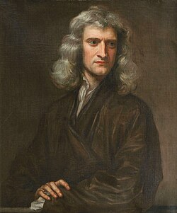

Quem foi e por que me inspira?
Isaac Newton foi um físico, astrônomo e matemático inglês. Ele me inspira por sua capacidade revolucionária de compreender o universo através da dedução lógica e da matemática.
O desenvolvimento da lei da gravitação universal, cujas fórmulas muitas vezes exigem o uso de expoentes, como o raio ao quadrado (r2), mudou para sempre a ciência.
Citações que levo para a vida
Se vi mais longe, foi por estar de pé sobre ombros de gigantes.
Fonte: Carta a Robert Hooke
Outra frase brilhante dele é:
O que sabemos é uma gota; o que ignoramos é um oceano.
Saiba Mais
Descubra mais sobre a vida dele na página da Wikipédia sobre Isaac Newton .